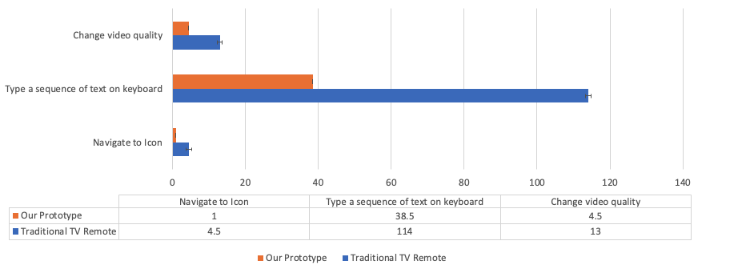

Project
Title : Interacting with Hand And Arm Gestures
Students : Pungponhavoan TEP and Tommy BURNOUD
Tutors : Céline Coutrix and Alix Goguey
1. Description
Smart TVs are the new fashionable thing for popular TV-manufacturing companies to push on consumers. And over the year, the smart TV gained popularity.
As it is an internet-connected device, people can do many things on such a large screen device from making a video call to browsing the internet and even playing games.
In this project, we will mainly focus on the problem of smart TV more specifically the interaction between the end-user to the TV.
Once we identified the problem of the existing smart TV, we will propose a new kind of interaction technique to improve user experiences. Building a prototype of our proposed solution and doing experimental will also be mentioned in this report.
2. Problem and State of Art
When it comes to controlling the TV most of you may think of a remote in the above figure, a classic remote control that consisted of many buttons on one rectangle shape. That kind of remote control is dedicated, meaning that each TVs needs one dedicated remote control. This is a problem when you have many TV in a single house.
On a smart TV interface, to handle a large number of options on a single display itself, the features and text must be relatively small. Inherently, this means they are difficult to see at a distance.
In 2013, Samsung has designed an interface smart tv that they introduced. There are 38 icons on a single page of the interface which was a pain to use conventional remote control.
Later on, they reduced the number of features on the screen to eliminate the above issues. But then the amount of navigation you have to do to see everything goes up.
The interaction with smart TV using a classic remote control remains difficult, just in a different way.
In a recent year, there is a bunch of interaction techniques came to replace the classic remote control such as Voice Control remote, a remote control equipped with a touchpad (Eg. Apple TV remote).
But sometimes playing or pausing content is easier with buttons than waking up a camera or microphone to listen to or see your command. On top of that, voice control could lead to inaccurate detection due to language ancient and some other more constraints.
Hence again, it is just the same problem in different views.
Assume that you want to you logging in to your Netflix account which password contained a long sequence of text with those new modern remote control. Counting the number of clicks and the number of times it will take to complete this will be huge. And it is almost impossible to speak out your password with Voice remote control even when you are home alone.
3. Proposed Solution
Our research question, How can make the interactions easier and more generic ?
We came up with the idea of making a multi-platform control wristband that can control or make the interaction more seamlessly.
The wristband will be a Bluetooth-based device equipped with a number of sensors.
Imagine that we are standing right in front of the TV and connecting the wristband to the TV you can control the TV in 2D spaces as you see. Meaning that if you move your hand to the right there is a continuous cursor on the interaction and it will move to the right with respect to your hand direction. On top of moving the cursor, there are interactions you can make with it such as Click, Scroll, Pinch to Zoom
You may be asked, What really is multi-platform control mean? It means that with that a single wristband you could control not only smart TV but also a car infotainment, smart fridge, or your computer and others more seamlessly. This will happen when you stay close to another device, the wristband will automatically connect to that device and you will be able to make interaction. So that you can wear the wristband all day long.
With this proposed solution, we believed this will improve the user experiences in terms of interaction regardless of satisfaction or time it takes to complete any task compared to a traditional remote control.
4. Implementation
To make the proposed solution become real and make an assessment compared to other interaction techniques, we will build a prototype.
In our case we will use Arduino (an open-source prototype tool) and some sensors such as an Accelerometer (MPU9150), a Bluetooth (HC-05) module and some other minor components. And below is how the data stream works.
On a cold start, we will check if the required sensor is attached or not. If the sensor is not plugged into the Arduino board it will not work. Otherwise, we will do the calibration for the Accelerometer sensor for 3 seconds. The calibration is done so that the device can know which direction is down and thus, correct for sensor inacuracies.
Once we have the sensor well-calibrated, we will continuously read the data of X and Y of the Accelerometer. The sensor we used ( the MPU9150) produced quite some noise. To eliminate this problem, we will do a filtering process to clean up the data.
The two figures below show the reading from the accelerometer for both the X and Y axis. The first figure is what we obtain when moving the accelerometer in a single direction without filetering and the second figure is the same but with filtering.
We can see that the signal is much more cleaner when filter and is better suited for the control of the cursor.
Once we got the data cleaned, in our first test case we will move the cursor by a threshold number. The threshold will be defined as the speed of the cursor to move on the interface.
The source code is available at :
https://github.com/tBurnoud/AVR-project
5. Expiremental
We hired 4 people to try out our very first built prototype. They have never seen the prototype before. After letting them play with the prototype for a while, we asked them to do 3 assigned tasks and measured the number of times it took to finish and the number of clicks using the conventional remote control and our prototype. The tasks are:
- From the home screen navigate to a told icon and open it.
- Using on-screen keyboard, type "The fox jumps over lazy dog" and click on search button that is next to the text box.
- Change the video qually to any.
After done all the tasks, we sent them an online survey for them to complete. The survey was all about user satisfaction. Quantitative and qualitative results will be discussed in the next section.
6. Results and Discussion
Time and Number of Click
-
Time to complete the task (in second)
The above figure shows the total time it was take to complete the task on two different interaction techniques. As you can see, our prototype significantly outperformed in all the tasks.
-
Number of Click to complete the task (avergae number of clicks for all participants)

Same as previous, the number of click also made a huge improvement. This is because our solution required to click when interaction button whereas the tradictional remote control need the button to be click even moving the cursor. This is a reason on task 2 (typing a sequence of word) have a huge different.
Based on these two measurement, it clearly show that our proposed interaction technique is work (improve the user experiences) and feisible.
User satisfaction
We got answers from our participants regarding how they feel and how do they think with this interaction technique.
All of them has a very good learning curve meaning that they all feel comfortable with our prototype over time and also they like the idea of this interaction technique or how the prototype works even it was in a very first phase of development. Some of them suggested adding other gestures for example, pinch out to copy the text and more.
7. Conclusion
Based on the results gathered using our first prototype,our solution seem to be promising. The overall time spent navigating through the interfaces as well as the number of clicks appear to be reduced when using our device.
With a few more iterations of protyping then testing, we believe that our solution can be an answer to our research question.
On the other hand, some problems weren't taken into account during this first evaluation and should be consider for the next ones.
For instance, muscle fatigue is a common issue when interacting using gesture but wasn't studied during the evaluation.
Also, our prototype was hand-held (instead of the initial wristband). This can help the user by allowing him to control the cursor using it's hand but can be a bias when studying interactions using a wristband.
Finally, we did not implemented the bluetooth communication so our device was connected to a laptop through a USB cable. It is possible that when switching to bluetooth, some latence can be introduce in the processing and destabilized the user.
In the end, our first solution is clearly promising but is still in its early phase and will require a lot of refinement.